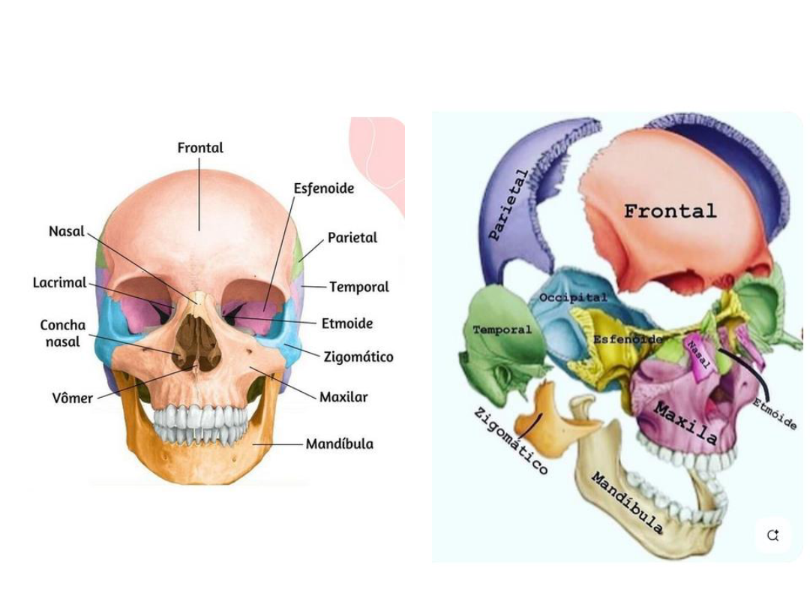
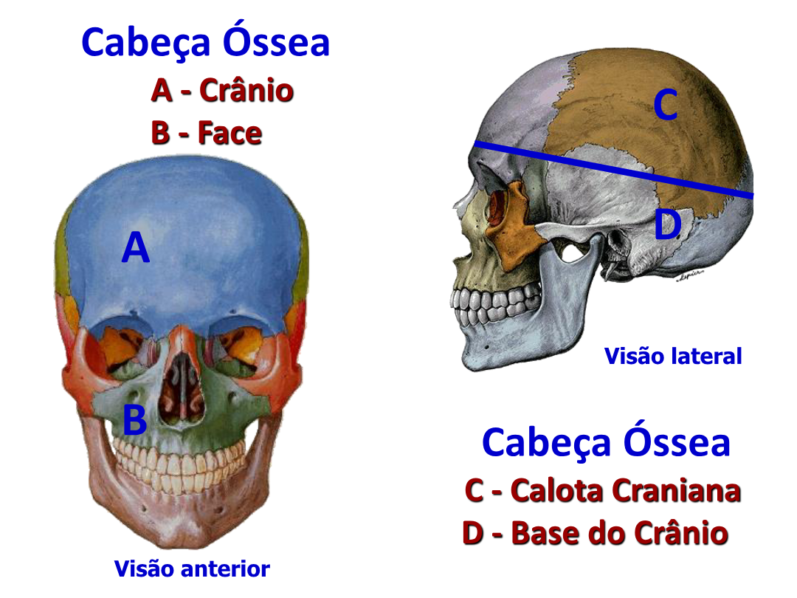

Capítulo 1
O crânio — 22 ossos e duas divisões
A cabeça óssea humana é uma das estruturas anatômicas mais complexas do corpo: 22 ossos articulados que protegem o cérebro, estruturam a face e abrigam órgãos dos sentidos.
O crânio é composto por 22 ossos, divididos em:
- Neurocrânio — 8 ossos que envolvem o cérebro.
- Esqueleto facial (viscerocrânio) — 14 ossos que formam a face.

Cabeça óssea — crânio vs face
